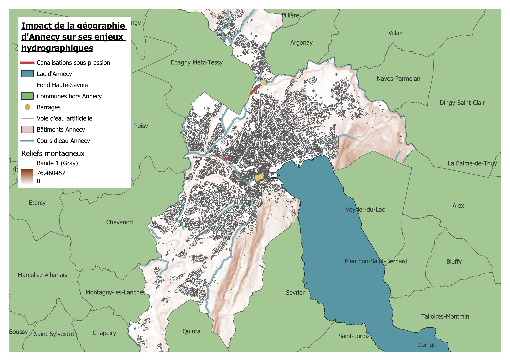
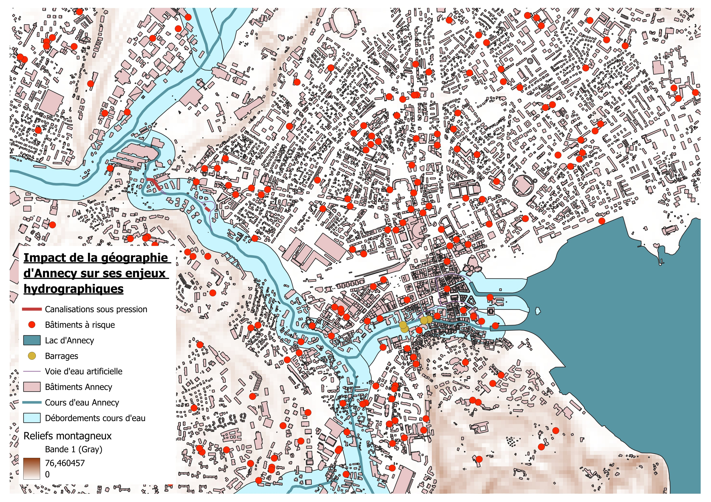

Ce travail se situe dans le contexte de l'UV SH40 - Les Risques : entre technique et société, dispensée à l'UTC par Johan Desbonnet.
Objectif : Représenter et analyser le risque dans un département
de notre choix.
Enjeu : Adopter une approche systémique afin de mettre en lien
les composantes du risque.
Processus :
Modéliser le risque dans le département à partir de ses composantes :
réalisation d'un Modèle Conceptuel de Données (MCD).
Représenter ce risque à différentes échelles :
réalisation de cartes à l'aide d'un Système d'Information
Géographique (SIG).
Caractériser l'accès à la donnée dans le contexte de la représentation
du risque d'un territoire :
analyse de la donnée utilisée ou manquante pour la réalisation du
travail.
Le département de la Haute-Savoie (74)
Région : Auvergne-Rhône-Alpes
Départements limitrophes : Ain (01), Savoie (73).
Pays limitrophes : Suisse, Italie.
Particularité : Département montagneux
Altitude minimum : 250m au-dessus du niveau de la mer.
(source : Wikipedia)
Point culminant : Le Mont-Blanc, 4806m au-dessus du niveau
de la mer. (source : Wikipedia)
Concerné par la
loi Montagne pour l'intégralité de son territoire
(Source : loimontagne.info)
Modèle conceptuel de données (MCD)
Les aléas des paysages montagnards en cascade : quel risque pour les
communes de la Haute-Savoie ?
---
title:
---
classDiagram
%%{
init: {
'theme': 'base',
'themeVariables': {
'primaryBorderColor': '#000000',
'mainBkg': '#ffffff'
}
}
}%%
class Morphodynamique:::morphodynamique
class Aléa:::alea
class AléaOrigineAnthropique:::alea
class AléaIndustriel:::alea
class AléaSanitaire:::alea
class Pollution:::alea
class AléaOrigineNaturelle:::alea
class AléaGéomorphologique:::alea
class MouvementTerrain:::alea
class GlaciairePeriglaciaire:::alea
class Avalanche:::alea
class AléaGéodynamique:::alea
class Séisme:::alea
class AléaHydroclimatiqueMétéorologique:::alea
class Inondation:::alea
class Humain:::alea
class Enjeu:::enjeu
class EspaceNaturel:::enjeu
class VoieCommunication:::enjeu
class Population:::enjeu
class Infrastructure:::enjeu
class Gestion:::gestion
class Prévention:::gestion
class GestionCrise:::gestion
class GestionPostCrise:::gestion
class Résilience:::gestion
class Acteur:::acteur
class Vulnérabilité:::vulnerabilite
class VulnérabilitéPopulation:::vulnerabilite
Morphodynamique --> Aléa : prédispose à
Aléa <|-- AléaOrigineAnthropique
Aléa <|-- AléaOrigineNaturelle
AléaOrigineAnthropique <|-- AléaIndustriel
AléaOrigineAnthropique <|-- AléaSanitaire
AléaOrigineNaturelle <|-- AléaGéomorphologique
AléaOrigineNaturelle <|-- AléaGéodynamique
AléaOrigineNaturelle <|-- AléaHydroclimatiqueMétéorologique
AléaIndustriel --> Pollution : peut causer
AléaSanitaire <|-- Pollution
AléaGéomorphologique <|-- MouvementTerrain
MouvementTerrain --> AléaIndustriel : peut entraîner
MouvementTerrain --> Morphodynamique : remodèle
AléaGéomorphologique <|-- GlaciairePeriglaciaire
AléaGéomorphologique <|-- Avalanche
GlaciairePeriglaciaire --> Avalanche : peut déclencher
Humain --> Avalanche : peut déclencher
AléaOrigineNaturelle --> Avalanche : peut déclencher
AléaHydroclimatiqueMétéorologique --> Avalanche : peut déclencher
AléaGéodynamique <|-- Séisme
Séisme --> AléaGéomorphologique : peut déclencher
AléaHydroclimatiqueMétéorologique <|-- Inondation
Inondation --> AléaHydroclimatiqueMétéorologique : entraine (facteur précipitations intenses)
Inondation --> Pollution : peut causer
class Enjeu{
+ id :
+ type :
+ localisation :
}
class EspaceNaturel{
+ type: alpage d'altitude,
lit des rivières
}
class VoieCommunication{
+ massif : massifs du Mont-Blanc,
Aravis, Haut-Giffre,
Aiguilles-Rouges et Chablais
}
class Infrastructure{
+ lieu: zone urbanisée, plaine, station de ski
+ type : habitation, terrain de sport de montagne, zone d'exploitation forestière
+ nombre
+ hors piste : boolean
+ sport
}
class Population{
+ nbre_personnes : int
+ blessés
+ décès
+ déplacés
+ sans domicile
+ isolés
}
Enjeu <|-- EspaceNaturel
Enjeu <|-- VoieCommunication
Enjeu <|-- Infrastructure
Enjeu <|-- Population
Morphodynamique --> Enjeu : intervient dans l'exposition de
Séisme --> Enjeu : fragilise/détruit
Inondation --> Enjeu : fragilise/détruit
Avalanche --> Enjeu : fragilise/détruit
class Gestion{
+ id :
+ type :
+ dénomination :
+ couts : float
+ duree : Date
+ commence()
+ prendFin()
}
class Prévention{
+ type_prevention : production connaissance
+ document :
+ administrations_concernees : Acteur[
}
class GestionCrise{
+ acteurs_mobilises : Acteur[]
}
class GestionPostCrise{
+ mesures_post_crises :
+ documents :
+ administrations_concernees : Acteur[]
}
class Résilience{
+ lois_arretes_resilience
+ acteurs : Acteur[]
}
Gestion <|-- Prévention
Gestion <|-- GestionCrise
Gestion <|-- GestionPostCrise
Gestion <|-- Résilience
Prévention --> Vulnérabilité : vise à réduire
class Acteur{
+ id :
+ nom : string
+ type
+ rôle
}
Acteur --> Gestion : intervient dans
Acteur --> Vulnérabilité : réduit
Vulnérabilité <|-- VulnérabilitéPopulation
Vulnérabilité --> Enjeu : est une propriété de
Morphodynamique --> Vulnérabilité : peut accentuer
class Morphodynamique{
+ site géographique
+ pente :
+ manteau neigeux
+ bassin glaciaire : boolean
+ type : plaine, montagne,
haute montagne, cours d'eau et lacs,
débit montagnard, réseau hydrographique
}
class Aléa{
+ localisation :
+ date :
}
class AléaIndustriel{
+ type : usine chimique
}
class MouvementTerrain{
+ origine : naturelle, anthropique
+ Variabilité du volume (qqls m3 à qqls millions de m3)
+ Variabilité de la vitesse
+ type_mouvement : lents et continus, rapides et discontinus
+ degats : éboulements, chutes de blocs, affaissements de sols,
coulées boueuses et torrentielles, glissements,
retrait-gonflement d'argile
}
class Avalanche{
+ vitesse: km/h
+ masse: m³
+ type: enum type_avalanche
+ neige: enum nature_neige
}
class Séisme{
+ hypocentre : localisation
+ épicentre : localisation
+ magnitude : échelle de Richter
+ intensité : échelle MSK
+ fréquence vibrations : int
+ durée vibrations : int
+ faille provoquée : verticale ou inclinée;
propagation en surface ou non
}
class Inondation{
+ type: inondations de plaine,
ruissellement pluvial, crues,
remontée de nappe phréatique
}
classDef morphodynamique fill:#e1d5e7;
classDef alea fill:#dae8fc;
classDef acteur fill:#f8cecc;
classDef enjeu fill:#d5e8d4;
classDef vulnerabilite fill:#f5f5f5;
classDef gestion fill:#ffe6cc;
Le DDRM du département de la Haute-Savoie (74) fait état des 17 aléas
qui impactent le territoire. Dans ce modèle conceptuel de données, nous
avons fait le choix de ne détailler (avec leurs attributs) que 6 aléas
clés. Ils nous permettent de structurer notre travail sur une partie du
système.
Retour critique
Clefs d'amélioration :
Ne présente qu'une partie du système.
Manque d'un travail supplémentaire sur la généralisation des classes
et des attributs afin de s'éloigner des instances.
La notion de vulnérabilité n'est pas assez développée.
Carte zoom de la couverture en DICRIMs par rapport au nombre de catnat
par communes
DICRIM : Disponibilité d'Information Communale sur les Risques
Majeurs CATNAT : Reconnaissance de l'état de catastrophe naturelle par
arrêté
Interprétation de la représentation et analyse des données
Sur cette représentation du département, nous observons que toutes les
communes de la Haute-Savoie à l'exception d'une (Vanzy) sont concernées
par un arrêté de reconnaissance d'état de catastrophe naturelle et que
seulement une partie des communes du département sont couvertes par un
DICRIM (135 communes sur 279 soit seulement 48,4 %).
Nous avons voulu vérifier qu'aucun arrêté CATNAT ne concernait la
commune de Vanzy. Nous avons été surprises de trouver dès les premiers
résultats de notre recherche internet des informations contradictoires.
En effet, selon
le site des services de l'État en Haute-Savoie, la commune de Vanzy est concernée par les arrêtés suivants :
Février 1993 : Inondation et coulées de boues
Octobre 1996 : Séisme
Juillet 2023 : Retrait-gonflement des sols argileux (mouvements
de terrain différentiels consécutifs à la sécheresse et à la
réhydratation des sols)
De plus, selon la même source, il est indiqué que l'ensemble du
département de Haute-Savoie bénéficie de la reconnaissance de
catastrophe naturelle pour les
inondations et action du vent (à titre exceptionnel) dans
l'arrêté du 18 novembre 1982 (sur la période du 6 au 10 novembre 1982).
À partir de ces observations, nous concluons que les données utilisées
de la base de données
Base nationale de Gestion ASsistée des Procédures Administratives
relatives aux Risques
(GASPAR) sont très probablement incomplètes ou de mauvaise qualité
facilitant les soucis de manipulation et les erreurs d'interprétation
des représentations produites à partir de ces données. Nous pouvons donc
légitimement nous interroger sur nos résultats concernant la couverture
en DICRIM du territoire.
Carte cas d'étude des aléas hydrographiques à Annecy
Annecy se situe dans la vallée de l'Isère et est entourée des montagnes
de l'Avant-Pays à l'ouest et les Aravis à l'est.


Analyse des données utilisées
Le champ Présence dans le projet correspond au pourcentage de
couches utilisant une source de données par rapport au nombre total de
couches pour toutes les cartes présentées sur cette page.
Source de données
Producteur
Disponibilité
Licence
Présence dans le projet
BDTOPO_3-4 traitement du 2024-10-01
IGN-F
Libre
Licence ouverte Etalab
45 % (9/20 couches)
ADMIN-EXPRESS_3-2 traitement du 2023-06-05
IGN-F
Libre
Licence ouverte Etalab
15 % (3/20 couches)
ne_10m_admin_0_countries
Natural Earth
Libre
?
10 % (2/20 couches)
GASPAR
Ministère de la Transition Écologique
Libre
Licence ouverte
10 % (2/20 couches)
QuickOSM
Communauté OpenStreetMap
Libre
licence ouverte GNU General Public License
15 % (3/20 couches)
BDAlti
5 % (1/20 couches)
Pour conclure, notre travail sur la représentation du risque dans le
département de la Haute-Savoie permet de soulever des questions
concernant la disponibilité et la qualité des données caractérisant le
territoire. Dans l'exemple précédent reprenant les informations
relatives aux DICRIMs et arrêtés CATNAT, nous avons observé la
difficulté de rassembler des données fiables. Ainsi, comment vérifier
l'exhaustivité de ces données afin de garantir des représentation non
mensongères ?
Conclusion
Au cours de cette présentation, nous avons identifié plusieurs
ouvertures possibles.
Tout d'abord, il aurait été intéressant de compléter notre propos en
finissant notre début de représentation de la commune de
Chamonix-Mont-Blanc avec notamment les intéractions des aléas
inondation, mouvements de terrain, avalanche, glaciaire et
périglaciaire, en étudiant notamment l'impact des changements
climatiques sur la région.
Dans un second temps, si la disponibilité des données le permet, une
représentation des mêmes types d'aléas ainsi que la gestion du risque
dans les pays limitrophes que sont la Suisse et l'Italie peut être
pertinent non seulement à titre de comparaison mais aussi pour
comprendre ce que les pays pourraient apprendre les uns et les autres de
leurs voisins.